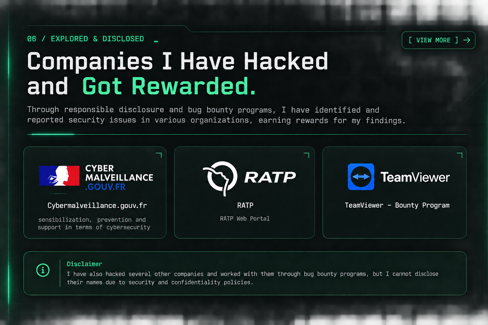
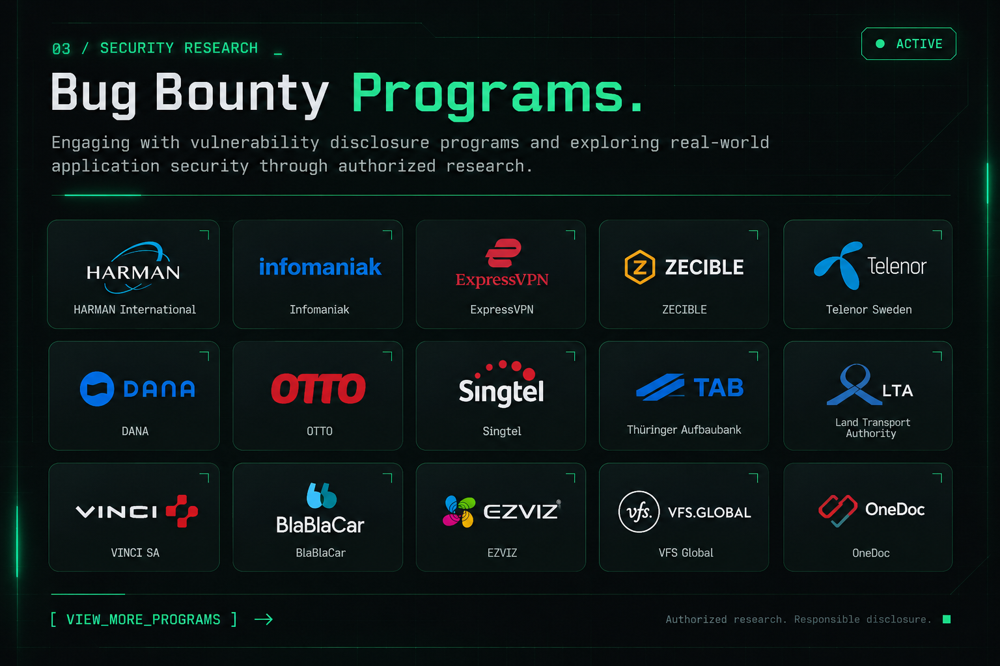

Self-driven learning
My journey began with self-learning and a curiosity about hacking, systems, and the way technology works.
Curious by nature. Driven by security. Always learning how things work — and how to make them safer.
I’m Shahariar Shad, also known as 0xShad — a cybersecurity enthusiast focused on learning, exploring, and understanding the security of digital systems.
My journey began with self-learning and a curiosity about hacking, systems, and the way technology works.
I enjoy exploring cybersecurity concepts, researching vulnerabilities, and learning responsible security practices.
Currently studying Computer Science & Engineering while continuing to build my knowledge in cybersecurity.
Started independently exploring hacking, experimenting, and learning how systems work.
Turned that curiosity into a deeper interest in cybersecurity, ethical hacking, and vulnerability research.
Pursuing a Bachelor of Science in Computer Science & Engineering while continuing to develop my security skills.
Working toward becoming an experienced cybersecurity professional and researcher.
A selection of work and security research that I’m able to disclose publicly.

Selected security work and responsible disclosures that I can share publicly.
I have also conducted authorized security research and worked with several other organizations. Their names and related details are not disclosed due to security policies and confidentiality requirements.
A collection of bug bounty program invitations. Open the directory to browse the program names.

Please ensure you have permission to publicly disclose any invitation or private program name before publishing this page.
For professional inquiries, collaboration, or cybersecurity discussions, feel free to reach out.